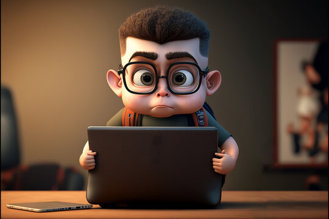

Hi, I'm Fabio Pecora!

I’m a software engineer and a master's student with a passion for solving problems with technology. I’ve worked on various projects, both in school and through different programs. I specialize in full-stack development and data science. I enjoy learning and applying new technologies to create solutions!
Passion for Basketball
I've been passionate about basketball for years! Whether playing in local leagues or watching the NBA, basketball has always been a huge part of my life. The energy, teamwork, and strategy of the game inspire me, and I bring that same energy to my work!

Passion for Music
Music is another huge part of my life. I love exploring new genres and artists, and I often find inspiration through music. It’s not just background noise for me; it’s a powerful force that drives my creativity.